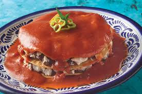

4.Campeche

- Platillo: Pan de cazón
- Ingredientes: Tortillas, cazón (tiburón pequeño), frijoles negros, salsa de jitomate.
- Historia: Inspirado en la lasaña, surgió por la necesidad de aprovechar el cazón, abundante en costas campechanas.
- Dato curioso: Es uno de los platillos más representativos del sureste mexicano.